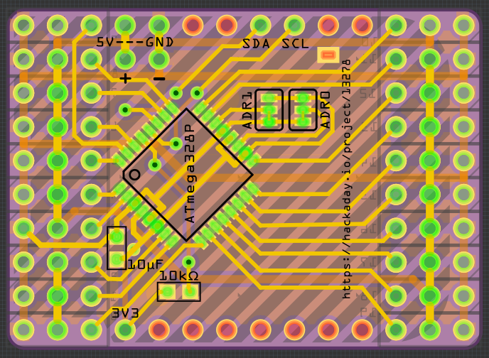

Pimped 20-channel PCB¶
Published on 2016-11-30 in Servo Breakout for WeMos D1 Mini.
OK, the one-sided board experiment was fun, but not very practical. Especially since all the fab houses out there make two-sided boards by default, so I don’t save anything. So I went back to the two-sided board, applied some of the improvements I discovered while working on the one-sided one, cleaned up the traces a bit, added a custom PCB outline with rounded edges and an outline of the D1 Mini on the bottom silkscreen, and I think it’s ready for ordering. But I will wait one more day, maybe I will spot some more things.
